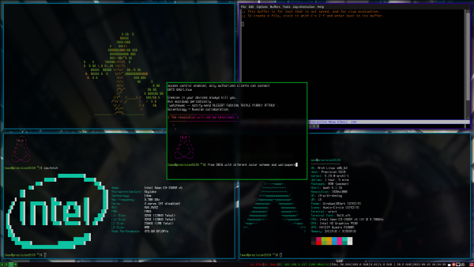

/etc/sysctl.conf
###
### Performance
###
# Recommended value to improve performance when sufficient memory exists in a system
vm.swappiness = 10
# Laptop mode
# vm.laptop_mode = 5
###
### SYSTEM SECURITY ###
###
# Kernel entropy pool size
kernel.random.poolsize=8192
# Enable address Space Randomization
kernel.randomize_va_space = 2
# Restrict core dumps
# fs.suid_dumpable = 0
# Hide kernel pointers
kernel.kptr_restrict = 2
# Restrict access to kernel logs
kernel.dmesg_restrict = 1
# Restrict ptrace scope
kernel.yama.ptrace_scope = 1
# Protect links on the filesystem
fs.protected_hardlinks = 1
fs.protected_symlinks = 1
# By setting core_uses_pid to 1, the coredump filename becomes core.PID
# kernel.core_uses_pidi = 1
# tty: ldisc: set 0 to prevent autoloading of ldiscs
dev.tty.ldisc_autoload = 0
# dmesg is the kernel log. It exposes a large amount of useful kernel debugging information, but this can often leak sensitive information, such as kernel pointers. Changing the above sysctl restricts the kernel log to the CAP_SYSLOG capability.
kernel.printk=3 3 3 3
# This restricts loading TTY line disciplines to the CAP_SYS_MODULE capability to prevent unprivileged attackers from loading vulnerable line disciplines with the TIOCSETD ioctl, which has been abused in a number of exploits before.
vm.unprivileged_userfaultfd=0
# Disallows open of FIFOs or regular files not owned by the user in world
fs.protected_fifos = 2
fs.protected_regular=2
# Magic SysRq key
kernel.sysrq = 0
# Non-Maskable Interrupt(NMI)
kernel.nmi_watchdog = 1
# Kexec allows replacing the current running kernel
kernel.kexec_load_disabled = 1
# User namespaces
# user.max_user_namespaces = 0
# Unprivileged user namespaces
kernel.unprivileged_userns_clone = 0
# Performance events add considerable kernel attack surface and have caused abundant vulnerabilities. This sysctl restricts all usage of performance events to the CAP_PERFMON capability (CAP_SYS_ADMIN on kernel versions prior to 5.8).
kernel.perf_event_paranoid=3
# ASLR is a common exploit mitigation which randomises the position of critical parts of a process in memory. This can make a wide variety of exploits harder to pull off, as they first require an information leak. The above settings increase the bits of entropy used for mmap ASLR, improving its effectiveness.
vm.mmap_rnd_bits=32
vm.mmap_rnd_compat_bits=16
###
### NETWORK SECURITY ###
###
# Do not allow unprivileged users to run code in the kernel through BPF
kernel.unprivileged_bpf_disabled=1
# Enable JIT compiler against SPECTRE variants
net.core.bpf_jit_enable=1
# Harden BPF JIT compiler
net.core.bpf_jit_harden=2
# Prevent SYN attack, enable SYNcookies (they will kick-in when the max_syn_backlog reached)
net.ipv4.tcp_syncookies=1
net.ipv4.tcp_syn_retries=2
net.ipv4.tcp_synack_retries=2
net.ipv4.tcp_max_syn_backlog=4096
# Disable packet forwarding
net.ipv4.ip_forward=0
net.ipv4.conf.all.forwarding=0
net.ipv4.conf.default.forwarding=0
net.ipv6.conf.all.forwarding=0
net.ipv6.conf.default.forwarding=0
# Enable IP spoofing protection
# Turn on source route verification
net.ipv4.conf.all.rp_filter=1
net.ipv4.conf.default.rp_filter=1
# Disable Redirect Acceptance
net.ipv4.conf.all.accept_redirects=0
net.ipv4.conf.default.accept_redirects=0
net.ipv4.conf.all.secure_redirects=0
net.ipv4.conf.default.secure_redirects=0
net.ipv6.conf.all.accept_redirects=0
net.ipv6.conf.default.accept_redirects=0
# Disable Redirect Sending
net.ipv4.conf.all.send_redirects=0
net.ipv4.conf.default.send_redirects=0
# Disable IP source routing
net.ipv4.conf.all.accept_source_route=0
net.ipv4.conf.default.accept_source_route=0
net.ipv6.conf.all.accept_source_route=0
net.ipv6.conf.default.accept_source_route=0
# Don't relay bootp
net.ipv4.conf.all.bootp_relay=0
# Disable proxy ARP
net.ipv4.conf.all.proxy_arp=0
net.ipv4.conf.all.arp_ignore=1
net.ipv4.conf.all.arp_announce=2
# Mitigate time-wait assassination hazards in TCP
net.ipv4.tcp_rfc1337=1
# Enable logging martian packages
# Otherwise it might cause DOS
net.ipv4.conf.default.log_martians = 1
net.ipv4.conf.all.log_martians = 1
# Enable bad error message Protection
net.ipv4.icmp_ignore_bogus_error_responses=1
# Enable ignoring broadcasts request
net.ipv4.icmp_echo_ignore_broadcasts=1
# Ensure that subsequent connections use the new values
# PUT TO THE END
net.ipv4.route.flush=1
net.ipv6.route.flush=1
# IPv6 addresses are generated from your computer's MAC address, making your IPv6 address unique and tied directly to your computer. Privacy extensions generate a random IPv6 address to mitigate this form of tracking. Note that these steps are unnecessary if you have spoofed your MAC address or have disabled IPv6.
net.ipv6.conf.all.use_tempaddr=2
net.ipv6.conf.default.use_tempaddr=2
# Disable IPv6
# net.ipv6.conf.all.disable_ipv6 = 1
# net.ipv6.conf.wlp2s0.disable_ipv6 = 1
/etc/fstab
File start
...
UUID=....
...
tmpfs /dev/shm tmpfs defaults,noatime,nodev,nosuid,mode=1777 0 0
tmpfs /tmp tmpfs defaults,noatime,nodev,nosuid,mode=1777 0 0
tmpfs /var/tmp tmpfs defaults,noatime,nodev,nosuid,mode=1777 0 0
/etc/csh.cshrc /etc/bash.bashrc /etc/profile
file start
...
umask 27
xhost -
mesg n
...
/etc/sddm.conf.d/default.conf
file start
...
[X11]
# Path to a script to execute when starting the display server
DisplayCommand=/usr/share/sddm/scripts/Xsetup
# Path to a script to execute when stopping the display server
DisplayStopCommand=/usr/share/sddm/scripts/Xstop
# Enable Qt's automatic high-DPI scaling
EnableHiDPI=false
# The lowest virtual terminal number that will be used.
MinimumVT=1
# Arguments passed to the X server invocation
ServerArguments=-nolisten tcp -nolisten local -nolisten abstract -keeptty -noreset
...
...
/etc/modprobe.d/modulessettings.conf
blacklist nouveau
blacklist pcspkr
blacklist kvm
blacklist kvm_amd
blacklist kvm_intel
# options snd_hda_intel power_save=1
options cfg80211 cfg80211_disable_40mhz_24ghz=1
options mac80211 minstrel_vht_only=1 ieee80211_default_rc_algo=minstrel_ht
options iwlwifi disable_11ax=1 disable_11ac=0 uapsd_disable=2
# enable_ini=0
# power_save=1
install dccp /bin/false
install sctp /bin/false
install rds /bin/false
install tipc /bin/false
install n-hdlc /bin/false
install ax25 /bin/false
install netrom /bin/false
install x25 /bin/false
install rose /bin/false
install decnet /bin/false
install econet /bin/false
install af_802154 /bin/false
install ipx /bin/false
install appletalk /bin/false
install psnap /bin/false
install p8023 /bin/false
install p8022 /bin/false
install can /bin/false
install atm /bin/false
install cramfs /bin/false
install freevxfs /bin/false
install jffs2 /bin/false
install hfs /bin/false
install hfsplus /bin/false
install squashfs /bin/false
install udf /bin/false
install cifs /bin/true
install nfs /bin/true
install nfsv3 /bin/true
install nfsv4 /bin/true
install ksmbd /bin/true
install gfs2 /bin/true
install vivid /bin/false
# install bluetooth /bin/false
# install btusb /bin/false
# install uvcvideo /bin/false
install firewire-core /bin/false
# install thunderbolt /bin/false